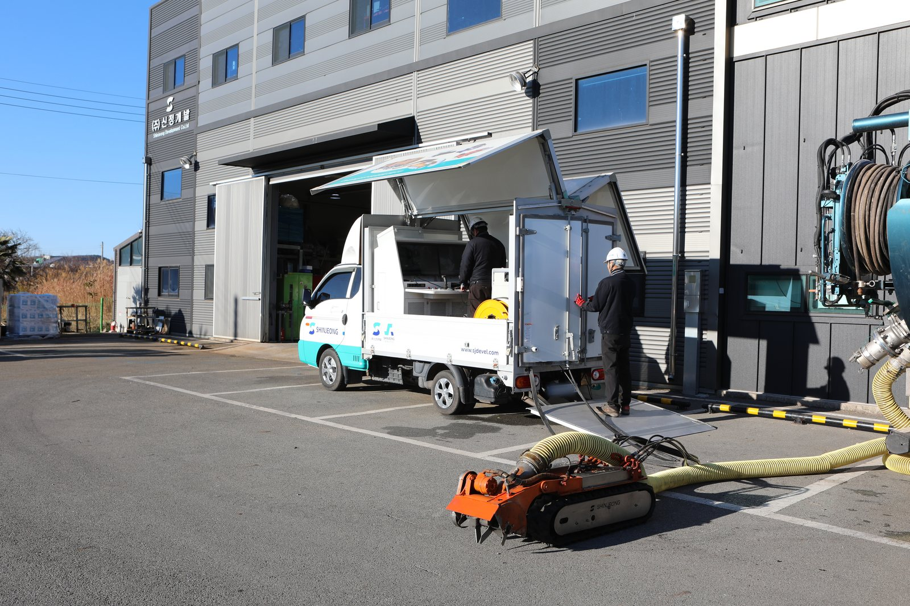
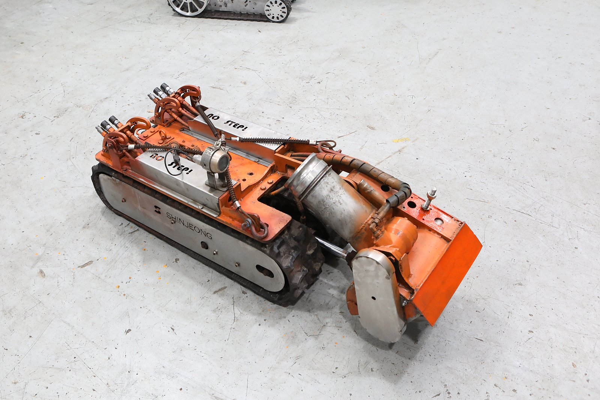
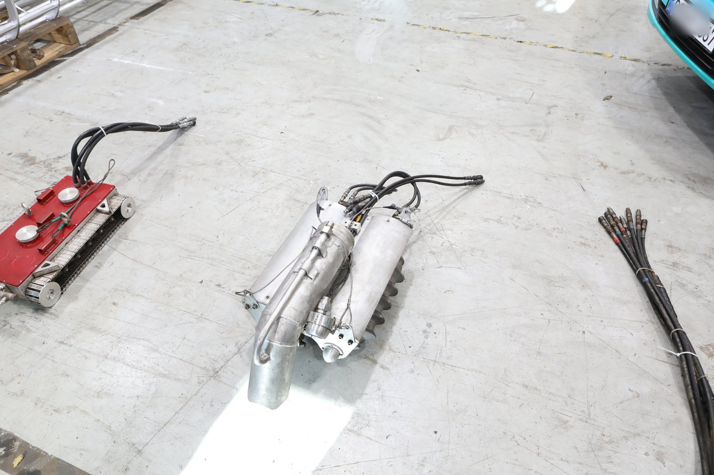
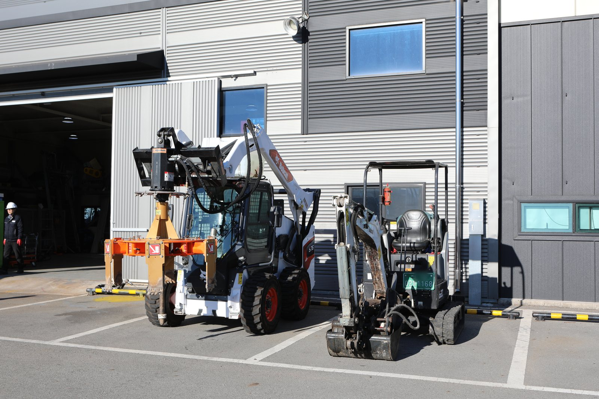
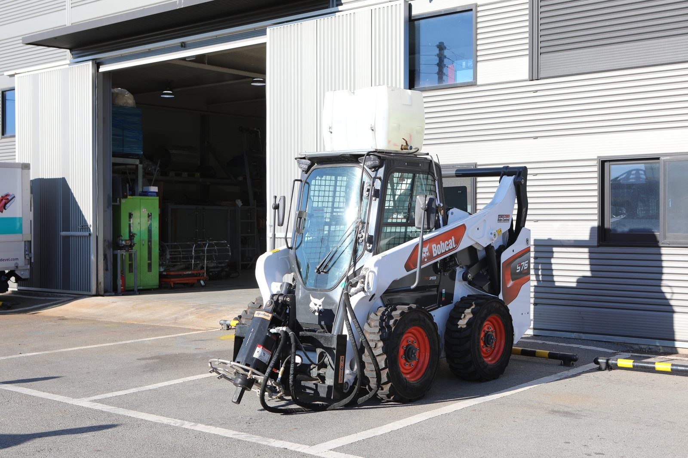
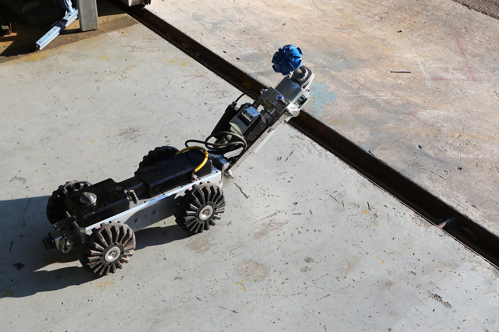

장비·로봇
보유 장비
보유 대수는 회사소개서(2024) 수록 기준이며, 현재 수량과 가동 상태는 문의 시 안내합니다.
설비 클리닝
이 업무 보기진공흡입차로 잔류물을 흡입하고 고압 JET-CLEANER로 세척합니다. 위험한 내부 작업에는 흡입 로봇을 먼저 투입하고, 작업자는 설비 밖 제어 차량에서 조종합니다.
| 장비명 | 규격 | 용도 | 보유 |
|---|---|---|---|
| 진공흡입차(습식) | 7.5 / 12㎥ | 폐기물 수집·운반, 준설 | 5대 |
| 고압 JET-CLEANER | 1,000bar × 100ℓ/min | 세척 | 3대 |
| 소형 JET-CLEANER | 200 · 250 · 400bar × 100ℓ/min | 세척 | 6대 |
| 온수·스팀 JET-CLEANER | — | 세척 | 3대 |
| 고압세척유닛 | — | 세척 | 3대 |
| 고압세척기 | — | 세척 | 1대 |
| 흡입 로봇 · 제어 차량 | — | 설비 내부 작업과 설비 밖 원격 조종무인 로봇 시스템 보기 | — |

촉매·충진물 작업
이 업무 보기건식 진공흡입차, AUTO SEPARATOR, 선별기로 촉매를 회수·선별하고, 집진기로 분진을 회수합니다. 반응기 내부 작업에는 흡입 로봇을 투입합니다.
| 장비명 | 규격 | 용도 | 보유 |
|---|---|---|---|
| 진공흡입차(건식) | 12㎥ | 촉매 교체 | 4대 |
| AUTO SEPARATOR | 5㎥ / 3㎥ | 촉매 교체 | 6SET |
| 원형 선별기 | — | 촉매 교체 | 1대 |
| 다단 선별기 | — | 촉매 교체 | 1대 |
| 집진기 | — | 촉매 교체 | 1대 |
| 백필터 집진기 | — | 분진 회수 | 1대 |
| 흡입 로봇 · 제어 차량 · 분리장치 | — | 반응기 내부 작업과 설비 밖 원격 조종무인 로봇 시스템 보기 | — |


준설·슬러지 회수
이 업무 보기무인준설로봇과 무인로더를 원격으로 조종해 퇴적물을 준설하고, 회수한 슬러지는 데칸타로 탈수합니다.
| 장비명 | 규격 | 용도 | 보유 |
|---|---|---|---|
| 무인준설로봇(파쇄형·흡입형) | — | 준설 | 2대 |
| 박스무인준설로봇 | — | 준설 | 1대 |
| 무인로더 | — | 준설 | 1대 |
| 무인궤도로더 | — | 준설 | 1대 |
| 스키드 로더 | — | 준설 | 1대 |
| 미니 포크레인 | SV-08 | 준설 | 1대 |
| 소형 굴삭기 | 1.8톤 | 준설 | 1대 |
| 진공흡입차(습식) | 7.5 / 12㎥ | 폐기물 수집·운반, 준설 | 5대 |
| 데칸타 | 10마력 | 슬러지 탈수 (혐기성 오니) | 1대 |
| 유압 트래시 펌프 | — | 준설 | 1대 |
| 오수 배수 펌프 | 220LPM | 준설 | 2대 |

관로·지하 조사 및 보수
이 업무 보기CCTV 조사차량과 관로 CCTV 로봇으로 관로 내부를 조사합니다. 맨홀 보수에는 스키드 로더를 씁니다.
| 장비명 | 규격 | 용도 | 보유 |
|---|---|---|---|
| CCTV 조사차량 | D=250~600mm | 관로 조사 | 2대 |
| 관로 CCTV 로봇 | — | 관로 조사 | 1대 |
| 탈취제거 SYSTEM | — | 관로 조사 | 1SET |
| 스키드 로더 | — | 맨홀 보수 작업 | 1대 |


공통 (운반·지원)
자재 운반과 현장 지원에 쓰는 장비입니다.
| 장비명 | 규격 | 용도 | 보유 |
|---|---|---|---|
| 카고크레인 | 5톤 | 자재 운반 | 1대 |
| 지게차 | 3톤 외 | 자재 운반 | 8대 |
| 고압 살수차 | 8.5톤 | 노면 청소 | 1대 |
| HYDRONIC PUMP | — | 자재 운반 | 1SET |
자체 개발해 온
무인 로봇 시스템
무인 흡입 로봇(Vacuum) 세대별 비교
탱크·Pond용 무인 흡입 로봇은 1세대부터 5세대까지 개발했습니다.
| 세대 | 방식 | 적용 대상 | 수중 작업 | 구동 | 비고 |
|---|---|---|---|---|---|
| 1세대 | 흡입형 | Pond, Tank(관로) | 가능 | 유압 | — |
| 2세대 | 파쇄 흡입형 | Pond, Open Ditch | 불가 | 전기·유압 | — |
| 3세대 | 파쇄 흡입형 | Pond, Tank | 가능 | 유압 | — |
| 4세대 | 흡입형 | Pond, Tank | 가능 | 유압 | 소형화 |
| 5세대 | 파쇄형 | Pond, Reactor | 가능 | 유압 | 소형화 |
5세대 무인 클리닝 로봇 주요 사양
5세대 무인 클리닝 로봇의 사양입니다.
| 항목 | 내용 |
|---|---|
| 방폭 대응 | 방폭 카메라로 원격 감시 · 알루미늄 본체 · 비철(Non-steel) 스크류 · 유압 구동 |
| 세척 | 전면부 Jet Nozzle 장착 |
| 조종 | 원격 조종 |
| 주행 | 스크류형·체인형 바퀴 (유동체 위 작업 가능) |
| 용도 | Tank·Reactor 내부의 액체·슬러지 제거 |
기타 클리닝 로봇
흡입 로봇 외에 토사·슬러지 작업과 고압 세척에 쓰는 로봇입니다.
| 로봇 | 대상 | 조종 | 구동 | 수중 작업 |
|---|---|---|---|---|
| 무인 로더(大) | 토사·슬러지 (실외) | 원격 조종 | 전기·유압 | 불가 |
| 무인 로더(小) | 토사·슬러지 (협소 공간) | 원격 조종 | 전기·유압 | 불가 |
| 무인 Jet Cleaner | 설비 고압 세척 (8+ Nozzle) | 원격 조종 | 전기 | 구동부 가능 |
연구개발 과제
기업부설연구소가 수행한 과제와 과제별 성능 지표입니다.
| 과제 | 활용 | 주요 성능 지표 | 구동 |
|---|---|---|---|
| 능동형 촉매 적재장치 | 촉매 반응탑 내 고체 촉매의 고밀도 적층 | 밀집도 17% 이상 · 적재량 22㎥/hr 이상 · 적재 범위 직경 5m 이상 · 중량 15kg 이하 | 공압 |
| 석유화학 저장탱크 협업형 클리닝 시스템 | 고위험물 저장탱크 내부 세정 | 세척율 100% · 세척 속도 벽면 0.8m/s, 천장면 0.5m/s · 모니터링 범위 25m · 무게 100kg 이하 · 부착력 100kg 이상 | 유압 |
| 수중 슬러지 수거 무인 자율 이동 로봇 시스템 | 하수도 슬러지 제거 | 크기 1×0.6×0.5m 이내 · 속도 0.1m/s 이상 · 중량 80kg 이하 · 방수 IPx7 · 위치 정확도 10cm 이하 | 유압 |
로봇 시제품 사양
기업부설연구소에서 제작한 시제품의 사양입니다. 벽면/천장 부착형은 공인시험기관(KCL) 입회 성능시험을 거쳤습니다.
| 로봇 | 크기 (폭×길이×높이) | 무게 | 구동 | 조종 |
|---|---|---|---|---|
| 벽면/천장 부착형 (Wall/Ceiling Mobile Robot) | 480 × 660 × 325mm | 59.5kg | 유압 140bar, 캐터필러 | 조이스틱 · 카메라 자율 제어 |
| 흡입/준설 (Screw Mobile Robot) | 490 × 730 × 260mm | 61.2kg | 유압 최대 140bar, 스크류 | 조이스틱 · 카메라 자율 제어 |
| 흡입/준설 (Grinding Mobile Robot) | 490 × 1,010 × 260mm | 81kg (분쇄기 19.8kg 포함) | 유압 최대 140bar, 스크류 | 조이스틱 · 카메라 자율 제어 |
| 파쇄 (Splinter Robot, Caterpillar Type) | 415 × 1,140 × 400mm | 79.2kg | 유압 최대 140bar, 캐터필러 | 조이스틱 |
| 파쇄 (Splinter Robot, Screw Type) | 490 × 1,010 × 260mm | 87.5kg | 유압 최대 140bar, 스크류 | 조이스틱 |
등록 특허
로봇과 준설 관련 등록 특허입니다.
| 특허 명칭 | 등록 연도 |
|---|---|
| 정합식 맨홀 | 2017 |
| 관내부 무인 준설 처리 시스템 | 2017 |
| 스크류 바퀴를 구비한 수륙양용 준설로봇 | 2020 |
| 소형관로 준설로봇 및 그 운전방법 | 2020 |
| 워터젯 유닛을 구비한 세정로봇 장치 | 2020 |
작업 시스템 구성
설비 내부에서 작업을 수행합니다.
설비 밖에서 작업 상황을 확인하고 조종합니다.
호스로 연결해 회수물을 흡입합니다.
필요한 작업에서는 회수물을 분리합니다.
적용의 출발점은
현장의 조건입니다
- 01출입구·이동 경로
장비가 드나들 출입구의 크기와 내부 이동 경로
- 02내부 코일·장애물
설비 내부의 코일과 구조물 등 장애 요소
- 03잔류물 성상
잔류물의 상태와 특성
- 04온도
설비 내부와 잔류물의 온도 조건
- 05호스 간섭
장비 이동 중 호스가 걸리거나 얽히는 구간
세부 진행은 현장과 업무에 맞춰 조정합니다. 현장 진행 방식 자세히 보기
회수한 물질의
다음 과정까지
- 01회수물 특성
클리닝과 준설로 회수한 물질의 특성을 먼저 확인합니다.
- 02탈수·고액분리
회수물에 맞는 고액분리·탈수 방식을 정합니다.
- 03처리 연계 범위
현장 조건에 맞는 처리 연계 범위를 안내합니다.
원심분리를 이용한 고액분리
여과·압착을 이용한 탈수
처리량·함수율 등 사양은 대상 물질의 응집 상태에 따라 달라지므로 상담 시 안내합니다.
관련 업무
설비 클리닝
탱크·Pond·배수로·R.T.O 내부의 잔류물과 퇴적물을 제거합니다.
자세히 보기촉매·충진물 작업
반응기의 촉매·충진물을 제거하고 교체합니다.
자세히 보기준설·슬러지 회수
하수·오수관과 처리시설의 퇴적물을 준설하고 슬러지를 회수합니다.
자세히 보기출처: (주)신정개발 회사소개서(2024) · 기술소개서(2025)